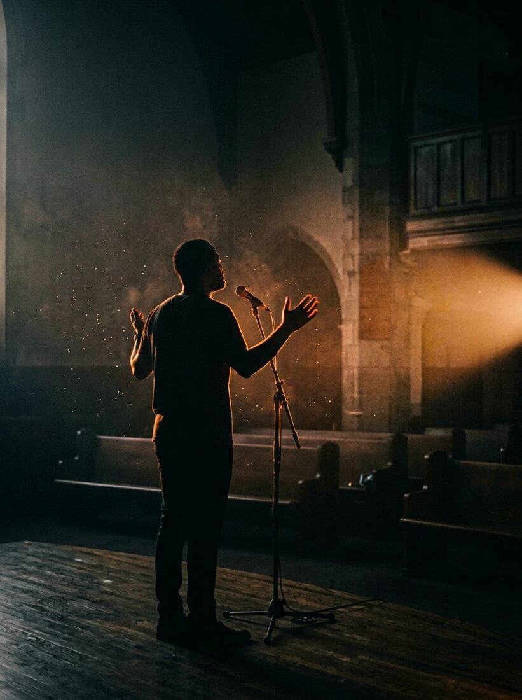

An altar for the nations
To raise an altar of pure worship and truth across nations, drawing souls closer to Jesus, building a community of worshippers and intercessors, and equipping the saints for deeper kingdom impact.
Agu-Awka, Anambra · Nigeria
Worship minister & teacher of the Word — raising an altar of pure worship and truth across nations.

Rev. Paschal Chukwudi is a passionate worship minister and servant of God, called to lead people into deeper intimacy with the Father through Spirit-filled worship and sound teaching of the Word.
He has ministered both on stage and online, carrying a grace to ignite prayer, healing and consecration in the lives of believers. His songs are spiritual encounters; his sermons are meant to transform hearts and challenge minds.
To raise an altar of pure worship and truth across nations, drawing souls closer to Jesus, building a community of worshippers and intercessors, and equipping the saints for deeper kingdom impact.
True revival begins at the altar of personal worship. When men encounter God in worship and in the Word, transformation is inevitable.
“I am just a man helped by God. Every sermon, every worship song, every moment of ministry is birthed from a place of communion. My desire is to see lives ignited with a hunger for God — to see broken hearts healed, and to see a generation return to the altar.”
Rev. Paschal Chukwudi
02 — Ministry
Three graces, one assignment: to see hearts return to the altar.
Songs that stir the soul and bring healing — birthed in prayer, released for the church.
Hear the sessionsSermons that confront, correct and comfort — the Word taught plainly, applied tenderly.
Explore teachingAudio messages, devotionals, prayer sounds and study guides for the believer's private altar.
Open the library03 — Sounds
Worship sessions, prayer sounds and song covers. Tap any frame to play it here, or open it on YouTube.
04 — Live broadcast
Worship sets, prayer watches and word sessions streamed from the sanctuary — so no one has to worship from a distance.
05 — Resources
Everything here exists to serve your personal communion — not to replace it. Take what feeds you, and pass it on.
Request a resourceFull-length sermons and teaching sessions on worship, consecration and the believer's walk.
Short daily readings written to keep your heart at the altar between Sundays.
Hour-long instrumentals and soaking sessions for the night watch, the study desk and the quiet hour.
Notes and outlines for worship leaders, intercessors and small-group shepherds.
06 — Gatherings
Dates and venues are confirmed personally. Send a note and the details will reach you first.
An evening of unbroken worship and plain teaching. First Friday, every month.
A quarterly night of prayer, fasting and consecration for worshippers and intercessors.
Whenever the altar opens online, the stream is announced here and by email.
07 — The Word
But the hour cometh, and now is, when the true worshippers shall worship the Father in spirit and in truth.
O worship the Lord in the beauty of holiness: fear before him, all the earth.
I will bless the Lord at all times: his praise shall continually be in my mouth.
08 — Moments


09 — Invite
Crusades, worship nights, conferences, retreats, hospital and prison ministry — write in with the date, the place and the burden of the gathering, and the ministry will respond personally.
10 — Connect